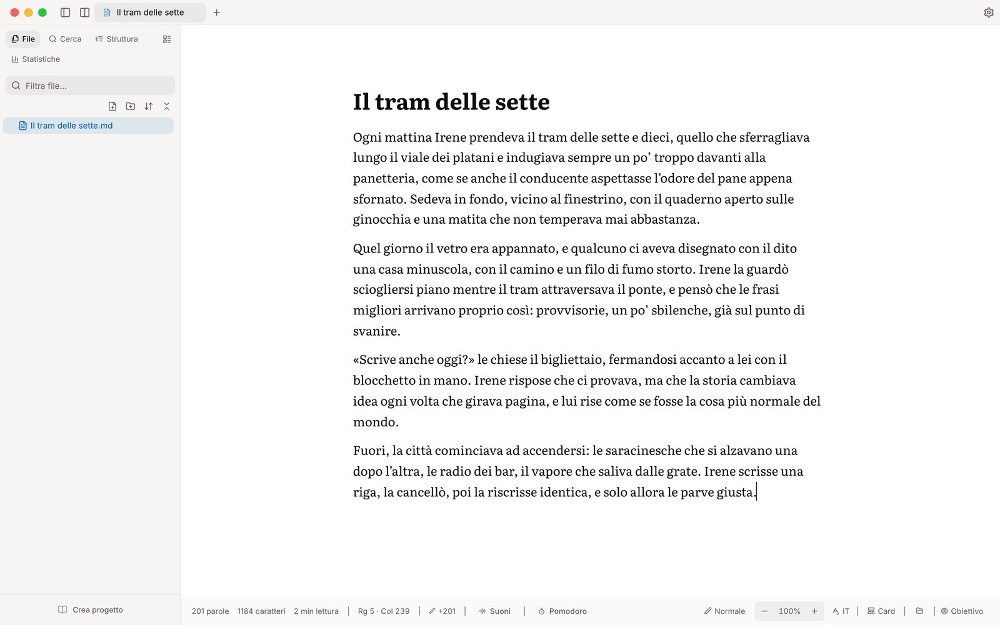
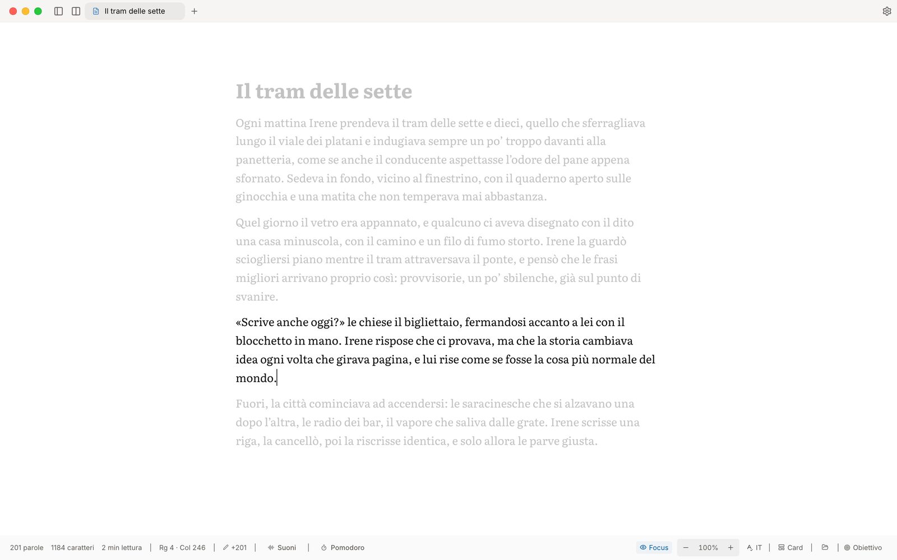

Un editor per chi scrive.
Lettera toglie di mezzo tutto quello che non è il tuo testo. E il testo resta sul tuo computer. Gratis, per macOS, Windows e Linux.
Si sblocca una volta sola. La prima volta macOS non la apre e dice che non può verificare che non contenga malware: succede perché Lettera non ha il certificato a pagamento di Apple. Ecco come aprirla. Si apre con un passaggio in più. macOS dice che Lettera «è danneggiato e non può essere aperto», ma il file non è rovinato e basta un comando nel Terminale. Ecco come aprirla.
La prima volta Windows ferma l'installer con una finestra blu, perché Lettera non ha un certificato a pagamento. Bastano due clic in quella finestra: ecco come.
Serve Ubuntu 24.04, Debian 13, Fedora 40 o versioni successive. Ci sono anche i pacchetti .deb e .rpm: tutti i formati.
Lettera è un'app per computer: mandati il link e aprilo dal Mac o dal PC.
Lettera c'è per macOS, Windows e Linux: scegli il tuo sistema.
Sembra un Mac con processore Intel: Lettera funziona solo sui Mac con chip Apple. Se il tuo Mac ha il chip Apple, la trovi qui sotto (come controllarlo).

Quello che serve per scrivere.
Il foglio segue il tuo modo di scrivere
In Focus resta acceso solo il paragrafo su cui lavori, o la frase, o la riga. Focus sui dialoghi lascia accese solo le battute fra virgolette. Senza distrazioni nasconde barre e comandi, che tornano quando porti il mouse al bordo. La Macchina da scrivere tiene la riga ferma a metà pagina e si aggiunge a qualunque delle altre. E la Modalità Card divide il testo in schede impaginate, pronte per una presentazione.

Sinonimi nella forma giusta
Il Thesaurus risale alla forma base della parola, da «cantavamo» a «cantare», e ti propone i sinonimi nella stessa forma: tempo, persona, genere e numero. Se la forma non si può ricavare, il sinonimo resta in forma base ed è segnalato. In italiano e in inglese, senza connessione.
Suoni veri
Tastiere meccaniche registrate dal vero e un mixer di suoni ambientali da comporre mentre scrivi: pioggia, temporale, caminetto, ruscello, onde, caffè. I suoni ambientali si scaricano la prima volta che li accendi.
Tutto sul tuo computer
I documenti sono file Markdown nelle tue cartelle, e il Thesaurus funziona senza rete. Se usi più computer puoi sincronizzare una cartella: i testi passano da un computer all'altro cifrati, quando sono accesi tutti e due, e nessun server ne tiene una copia.
Scarica Lettera.
Ultima versione: , del . Quando ne esce una nuova, te la propone Lettera stessa.
macOS Il tuo sistema
Mac con chip Apple (M1 e successivi), macOS 13.3 Ventura o più recente.
Si apre la pagina di GitHub: scarica il file che finisce in _aarch64.dmg.
Windows Il tuo sistema
Windows 10 (versione 1803 o successiva) e Windows 11, 64 bit, processore Intel o AMD.
Si apre la pagina di GitHub: scarica il file che finisce in _x64-setup.exe.
Linux Il tuo sistema
64 bit, processore Intel o AMD, con Ubuntu 24.04, Debian 13, Fedora 40 o versioni successive.
Si apre la pagina di GitHub: scarica il file che finisce in .AppImage, .deb o .rpm.
Come faccio a sapere se il mio Mac ha il chip Apple?
Apri il menu Apple (la mela in alto a sinistra) e scegli Informazioni su questo Mac. Se c'è la voce Chip, per esempio «Apple M1», Lettera funziona. Se invece c'è la voce Processore con un nome Intel, Lettera non funziona sul tuo Mac.
Se l'hai già scaricata e macOS dice «Non puoi aprire “Lettera” perché l’applicazione non è supportata sul Mac», è lo stesso motivo: il Mac ha un processore Intel.
Le versioni precedenti e le note di rilascio sono su GitHub.
Aprire Lettera la prima volta.
Lettera è un progetto indipendente e non passa da un app store. Per aprire un'app senza domande, macOS e Windows vogliono che sia firmata con un certificato a pagamento, e Lettera non lo è. Per questo, la prima volta, la bloccano con un avviso e ti chiedono di confermare che ti fidi. Lo fai una volta sola: dopo, si apre come tutte le altre app.
macOS
Questi passaggi valgono da macOS 15 Sequoia in poi. Su macOS 14 e precedenti basta fare clic con il tasto destro su Lettera, scegliere Apri e confermare.
Se al passaggio 2 macOS dice invece che Lettera «è danneggiato e non può essere aperto», hai una versione con la firma incompleta: ecco come aprirla.
-
Apri il file .dmg dalla cartella Download e trascina Lettera sulla cartella Applicazioni (nella finestra del .dmg si chiama «Applications»). Da qui in poi aprila dalla cartella Applicazioni, non dalla finestra del .dmg.
-
Fai doppio clic su Lettera nella cartella Applicazioni. macOS non la apre e mostra questo messaggio:
Lettera non è stata aperta
Apple non è in grado di verificare che Lettera non contenga malware che potrebbero danneggiare il Mac o compromettere la tua privacy.
Fai clic su Fine.
Non fare clic su «Sposta nel Cestino» e non premere Invio: il pulsante blu sposta Lettera nel Cestino. Se è già successo, ecco come recuperarla.
-
Apri il menu Apple (la mela in alto a sinistra) e scegli Impostazioni di Sistema…; nella barra laterale fai clic su Privacy e sicurezza (potrebbe servire scorrere).
-
Scendi fino alla sezione Sicurezza e fai clic su Apri comunque.
Privacy e sicurezza
Sicurezza
Consenti applicazioni da App Store e aziende di sviluppo noteIl Mac ha bloccato Lettera per garantire la sicurezza. Apri comunqueIl pulsante resta lì per circa un'ora dopo il passaggio 2. Se non lo vedi, ecco perché.
-
macOS chiede di nuovo conferma:
Vuoi aprire Lettera?
Apple non è in grado di verificare che l’elemento non contenga malware che potrebbero danneggiare il Mac o compromettere la tua privacy. Non aprirlo se non hai la certezza che provenga da una fonte affidabile.
Fai clic su Apri comunque, non sul pulsante blu, e conferma con Touch ID o con la password del Mac.
È l'ultimo avviso, e c'è solo perché Lettera non ha il certificato a pagamento di Apple. Se l'hai scaricata da questa pagina, viene da me.
Fatto: Lettera si apre. Da qui in poi basta un doppio clic, e quando esce una versione nuova Lettera te la propone e la installa.
Scaricata dal browser, la versione di adesso non si apre con un doppio clic: macOS dice che Lettera «è danneggiato e non può essere aperto» e non offre «Apri comunque». Il file non è rovinato: a questa versione manca un pezzo della firma. Per aprirla bisogna togliere a Lettera l'etichetta di quarantena che macOS mette ai file scaricati: fallo solo se l'hai scaricata da questa pagina.
-
Apri il file .dmg dalla cartella Download e trascina Lettera sulla cartella Applicazioni (nella finestra del .dmg si chiama «Applications»).
-
Apri il Terminale (lo trovi in Applicazioni › Utility), incolla questo comando e premi Invio:
xattr -dr com.apple.quarantine /Applications/Lettera.appSe il Terminale va a capo senza scrivere niente, ha funzionato. Se scrive «xattr: No such file», Lettera non è nella cartella Applicazioni: torna al passaggio 1.
Il comando toglie a Lettera, e solo a lei, l'etichetta di quarantena: così macOS non la controlla più all'apertura. Non scarica e non installa nulla. Se il Terminale blocca l'incollaggio, è macOS che ti protegge dai comandi copiati dai siti: in quel caso fermati e scrivimi.
-
Apri Lettera dalla cartella Applicazioni.
Ho fatto clic su «Sposta nel Cestino»
Se non hai svuotato il Cestino, Lettera è lì. Apri il Cestino dal Dock, fai clic con il tasto destro (o tenendo premuto Ctrl) su Lettera e scegli Ripristina: torna nella cartella Applicazioni. Poi riparti dal passaggio 2.
In Privacy e sicurezza non c'è «Apri comunque»
Il pulsante compare solo dopo che hai provato ad aprire Lettera, e resta per circa un'ora. Apri di nuovo Lettera dalla cartella Applicazioni, fai clic su Fine e torna subito in Privacy e sicurezza.
macOS dice che Lettera «è danneggiato e non può essere aperto»
Succede con le versioni fino alla 0.2.47 scaricate dal browser: il file non è rovinato, ma la sua firma è incompleta e macOS non offre «Apri comunque». Scarica la versione più recente da questa pagina. Se vuoi tenere quella che hai, apri il Terminale, incolla questo comando e premi Invio:
xattr -dr com.apple.quarantine /Applications/Lettera.appToglie a Lettera, e solo a lei, l'etichetta di quarantena dei file scaricati. Poi aprila come al solito.
Per chi usa già il Terminale
Questo comando scarica l'ultima versione, la copia nella cartella Applicazioni e la apre senza l'avviso di macOS. Non installa nient'altro e non cambia le impostazioni di sicurezza del Mac.
curl -fsSL https://github.com/ManoloZocco/lettera-releases/releases/latest/download/install-macos-aarch64.sh | bashPrima di eseguirlo puoi scaricare lo script e leggerlo con un editor di testo. Se il Terminale blocca l'incollaggio, usa il .dmg: è la strada pensata per tutti.
Windows
-
Se il browser dice che il file non viene scaricato spesso, apri l'elenco dei download e scegli di tenerlo. In Edge la scelta è nel menu «…» accanto al file.
-
Apri il file Lettera_…_x64-setup.exe dalla cartella Download. Windows lo ferma con una finestra blu:
PC protetto da Windows
Microsoft Defender SmartScreen ha impedito l'avvio di un'app non riconosciuta. L'esecuzione di tale app potrebbe costituire un rischio per il PC.
Ulteriori informazioni
-
Fai clic su Ulteriori informazioni. La finestra si allarga:
PC protetto da Windows
Microsoft Defender SmartScreen ha impedito l'avvio di un'app non riconosciuta. L'esecuzione di tale app potrebbe costituire un rischio per il PC.
App: Lettera_…_x64-setup.exe
Controlla che accanto ad «App:» ci sia il nome del file di Lettera, poi fai clic su Esegui comunque. Accanto ad «Autore» Windows dice che è sconosciuto: è normale, vuol dire che manca il certificato a pagamento.
-
Si apre l'installazione di Lettera: vai avanti con il pulsante in basso a destra fino alla fine. Poi trovi Lettera nel menu Start.
Quando esce una versione nuova, Lettera te la propone e la installa.
Non c'è «Esegui comunque»
Su alcuni PC il pulsante può mancare, per esempio su quelli di un'azienda o di una scuola con regole più strette. In quel caso Windows non permette di installare app che non conosce: chiedi a chi gestisce il PC.
Linux
Scegli il formato che preferisci e lancia i comandi dal terminale. Servono Ubuntu 24.04, Debian 13, Fedora 40 o versioni successive, e le distribuzioni basate su queste, come Linux Mint 22. Su Ubuntu 22.04 e Debian 12 il pacchetto si installa, ma Lettera non parte.
-
AppImage: un file solo, che si avvia senza installare nulla su tutte le distribuzioni indicate sopra.
cd "$(xdg-user-dir DOWNLOAD)" chmod +x Lettera_*_amd64.AppImage ./Lettera_*_amd64.AppImageSe non parte e il terminale scrive «Cannot mount AppImage, please check your FUSE setup», installa FUSE 3 (
sudo apt install fuse3su Ubuntu e Debian,sudo dnf install fuse3su Fedora), oppure avviala aggiungendo--appimage-extract-and-runin fondo al comando. -
.deb, per Debian, Ubuntu e derivate.
cd "$(xdg-user-dir DOWNLOAD)" sudo apt install ./Lettera_*_amd64.deb -
.rpm, per Fedora e derivate. Su openSUSE Tumbleweed usa
sudo zypper installal posto disudo dnf install.cd "$(xdg-user-dir DOWNLOAD)" sudo dnf install ./Lettera-*.x86_64.rpm
Se nella cartella Download ci sono più versioni di Lettera, tieni solo la più recente prima di lanciare i comandi.
Quando esce una versione nuova, Lettera te la propone e la installa, con tutti e tre i formati; con .deb e .rpm ti chiede la password.